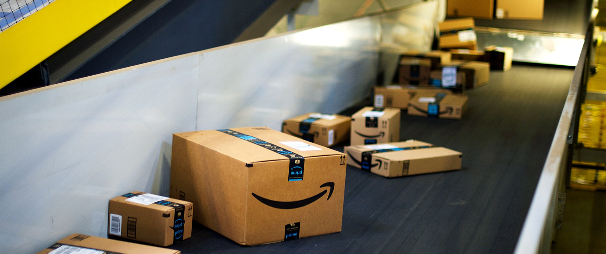

I'm an award-winning designer, developer, and entrepreneur who combines the big picture with an obsession over
fine details. I love creating products that delight users and add tangible value.
June 2021 - Present • New York, NY
Building trust in blockchains at Chainalysis.
Working on
Chainalysis' Know Your Transaction platform to help
organizations reduce manual workflows, stay compliant with local and global regulations, and safely interact
with emerging technologies such as DeFi.
August 2019 - June 2021 • Redmond, WA
Software Engineer at Microsoft.
Worked on Microsoft's Viva Insights team, bringing together communications, knowledge, learning, resources,
and insights into an employee experience that integrates seamlessly into the apps you use every day.
May 2018 - August 2018 • Sunnyvale, CA
Software Engineering Intern at Amazon.
Software Engineering Intern on Amazon's Supply Chain Technology at Amazon Lab126. Created an objective and
standardized way to score Amazon hardware suppliers.

May 2018 - August 2018 • Redmond, WA
Software Engineering Intern at Microsoft.
Worked on Microsoft Office 365's Workplace Analytics team, developing analytics to help offices around the
world become more productive.
May 2017 - August 2017 • New York, NY
I worked at Namely as their first software engineering intern, ever.
As a software engineering intern, I worked closely with Namely's core HCM team. I was given ownership of their
product timeline, which I helped reshape both aesthetically and functionally to increase user engagement and
create a more elegant experience.
May 2016 - November 2016 • San Francisco, CA
Software Engineering Intern at Twitter.
Worked on Twitter's Timeline Service team. Developed a tool to analyze and debug why posts were selected for
injection into user timelines, as well as implementing general overall improvements to the Twitter timeline
experience.
October 2015 - May 2016 • New York, NY
Software Engineering Intern at Vine.
Wrote Espresso tests for Twitter's Vine app for Android, an app that has over 50 million downloads on the Play
Store.